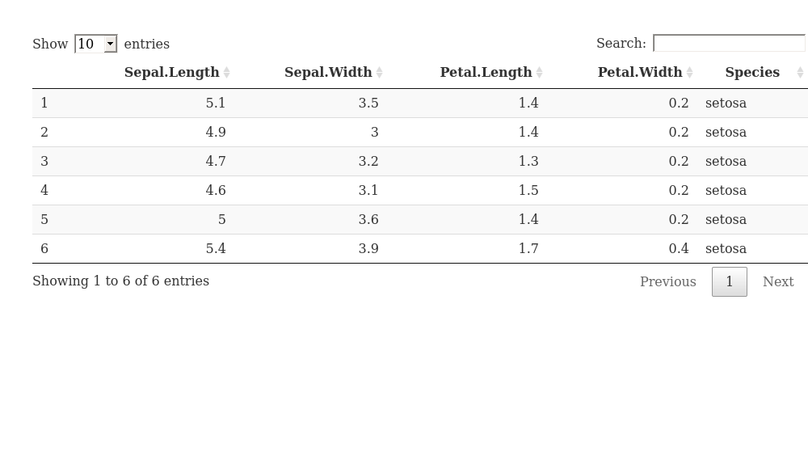
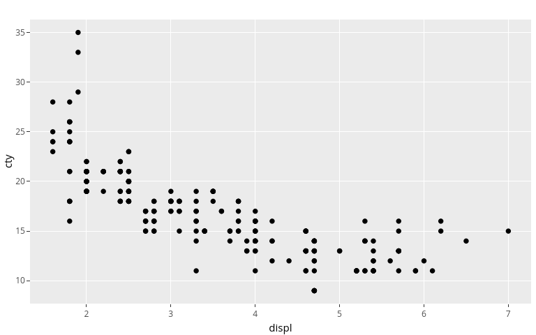
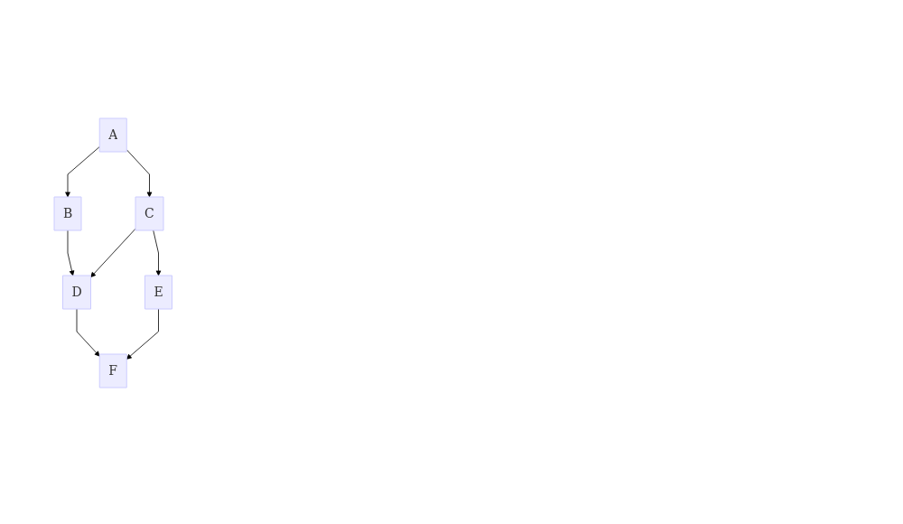

demonstration
By Jannik Buhr
January 1, 0001
Tests
Citations
R Core Team (2020)
Math
Example from the mathjax demo:
When a ≠ 0, there are two solutions to \(ax^2 + bx + c = 0\) and
they are
$$x = {-b \pm \sqrt{b^2-4ac} \over 2a}.$$
If I have a random $ and another $ in my text.
Preview Image
plt <- ggplot2::ggplot(ggplot2::mpg, ggplot2::aes(displ, cty)) +
ggplot2::geom_point()
plt

Details
print("hello world")
[1] "hello world"
p5
w and s move the left paddle, o and l move the right paddle.
Xaringan Slides
DT
DT::datatable(head(iris))

Plotly
print("test")
[1] "test"
plt <- ggplot2::ggplot(ggplot2::mpg, ggplot2::aes(displ, cty)) +
ggplot2::geom_point()
plotly::ggplotly(plt)

However, while this options brings back plotly, it also disables math rendering for this document on the site.
Math
$$sd = \sqrt{\frac{\sum_{i=0}^{n}{(x_i-\bar x)^2}}{(n-1)} }$$
diagrammeR
DiagrammeR::mermaid(
"
graph TB
A-->B
A-->C
C-->E
B-->D
C-->D
D-->F
E-->F
")

R Core Team. 2020. R: A Language and Environment for Statistical Computing. Vienna, Austria: R Foundation for Statistical Computing.
- Posted on:
- January 1, 0001
- Length:
- 1 minute read, 169 words
- See Also: